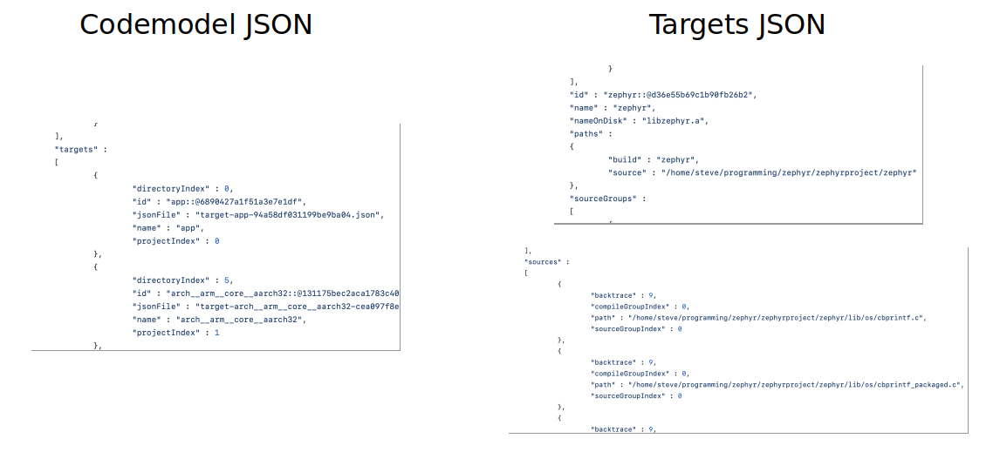

Next Steps for Software Bill of Materials (SBOM) Generation in Zephyr - - - Steve Winslow [Boston Tech Law](https://www.bostechlaw.com/steve-winslow) steve@swinslow.net
### Agenda 1. Intro to SBOM / SPDX 2. Zephyr and SPDX 3. Implementation Details 4. Group Discussion
### What is an SBOM? Software Bill of Materials _"a formal record containing the details and supply chain relationships of various components used in building software"_ - [ntia.gov/SBOM](https://www.ntia.doc.gov/files/ntia/publications/ntia_sbom_energy_jan2021overview_0.pdf) [](https://ntia.gov/SBOM)
### What is SPDX? Software Package Data Exchange _"An open standard for communicating software bill of material information, including components, licenses, copyrights, and security references"_ - [spdx.dev](https://spdx.dev) ISO/IEC 5962:2021 ([ISO spec](https://www.iso.org/standard/81870.html), [ISO PAS](https://standards.iso.org/ittf/PubliclyAvailableStandards/index.html), [latest](https://spdx.github.io/spdx-spec/)) [](https://spdx.dev)
### Zephyr and SPDX Added in 2.6.0: [`west spdx`](https://docs.zephyrproject.org/latest/develop/west/zephyr-cmds.html#west-spdx) Create SPDX documents simultaneously with Zephyr `west build`; one additional command Leverages CMake [file-based API metadata](https://cmake.org/cmake/help/latest/manual/cmake-file-api.7.html)
### Zephyr and SPDX
### Zephyr and SPDX
### Zephyr and SPDX * SPDX Documents for: 1. Zephyr sources 2. (optionally) sources used from SDK 3. application sources 4. build outputs * hashes for file integrity * relationships for tracing compiles, linking * license data from SPDX-License-Identifier tags
### Zephyr and SPDX
### Zephyr and SPDX <img src="images/z5.png" />
### Zephyr and SPDX
### Benefits 1. traceability and security 2. evidence from build time 3. license info management 4. standardized / interchangeable
### CMake metadata To activate, create empty file at: `$BUILD_DIR/.cmake/api/v1/query/codemodel-v2` - - - When building, CMake outputs metadata at: `$BUILD_DIR/.cmake/api/v1/reply/`
### CMake metadata Outputs JSON metadata file for each build stage target: * target file being built (e.g. `libkernel.a`) * target dependencies (prior build stages) * source files * compiler command-line options used
### CMake metadata 
### CMake metadata
### zspdx `/scripts/west_commands/zspdx/` Main entry point in `sbom.py` Call from command line via [`west spdx`](https://docs.zephyrproject.org/latest/develop/west/zephyr-cmds.html#west-spdx)
### zspdx Three stages: * **walker**: analyze the build * parse CMake JSON metadata * analyze relationships between targets and files * optionally: analyze includes via dry-run recompiles * **scanner**: scan files for hashes and license IDs * **writer**: output SPDX documents
### Current Deficiencies Makes several assumptions about user's build process Limited to files that CMake reports in metadata Treats _all_ CMake target stages as SPDX Packages Not everyone wants source-level SBOMs Doesn't include all NTIA minimum fields
### Discussion
### Usage Who is using this now? Who would be interested in using this?
### Assumptions Which assumptions are wrong? * use of CMake, SDK, ... * structure of code trees * relationships between files
### Next features What else would be useful to have? * Simplified SBOMs (package level only) * Include all NTIA-required fields * Better licensing info and detection * Pick up more details on file versions * Analyze files differently * Include details on build tools used * Generate distribution tarball with sources
### Community Are you willing to participate in improving / testing? * collaborate on identifying use cases, build setups * validate assumptions * explore which files should be included vs. excluded * add and improve features - - - If yes, contact me! steve@swinslow.net GitHub: swinslow
### Thank you slides and talk: CC-BY-4.0 [github.com/swinslow/slides](https://github.com/swinslow/slides) Zephyr Developer Summit 2022